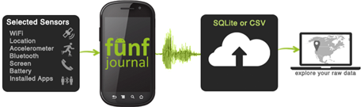

funf Documentation
Following many requests to try out the platform, we are releasing a bare-bones version so that you could get a feel of funf before diving into the full source code. We will gradually be adding functionalty and tutorials.
The funf Seak Peek Android App: A pre-compiled "lite" version of the funf phone-side data collection application.
funf Sneak Peek App
The funf sneak peek app is designed to give you a taste of how you will configure sensors and and a chance to look at the data that sensors will produce. It essentially puts you into the role of a study manager or self-tracker, allowing you to configure data collection parameters for a sample set of data probe and collect background sensing data as the phone is used. You can then export the data out of the phone and review them in sqlite format, or use our supplied python utility to convert them to easily accessible "comma separated value" text files, or CSV files. We also provide a sample MS Excel file that shows you how you could import data from the CSV file into an Excel spreadsheet and generate a simple graph to visualize them - we specifically show how the battery-level probe data could be easily visualized.

The idea of this initial app release is to provide an "essentials-only" experience, without the need to set up any back-end servers for data upload or remote configuration. You can downolad the funf Sneak Peek App and accompanying files in the download section.
IMPORTANT NOTE: All of the collected data is in your domain - your phone, and wherever you might choose to export your data to. You alone have access to it and decide what is done with it. We have no access to any of the data.

Collecting Data
The main screen lets you know whether or not sensors are scheduled and collecting data, and enables you to turn the sensors on and off at the push of a button. Turning all sensors off will stop automatic scanning from happening. If you turn sensors on again they will resume with the same configuration they had before. From the “Main Menu” you can start configuring sensors, or export existing sensor data.
Configuring Sensors
Tap “Configure Sensors” to see details about which sensors are currently enabled, and how often they are scanning. Tap any sensor to configure it. The sensors that are available in the sneak peek are:
- Wifi - Takes a snapshot of the Wifi hotspots available
- Location - Uses cell and Wifi networks along with GPS to computer current location
- Accelerometer -
- Bluetooth - A snapshot of nearby bluetooth devices
- Screen - Records when the screen is turned on and off
- Battery - Records the current state of the battery
- Installed Apps - A snapshot of the apps that are installed
- Running Apps - A snapshot of the apps that are currently running
Some sensors passively detect all events and will not give you the option to configure their scanning frequency. After you change a sensor’s configuration, the sensor will be reset and run immediately (assuming Sensors are “ON”). The sensor is scheduled to run regularly with a period configured by the “Scan Interval” setting.
You can manually run a sensor by tapping the “Scan Once Now” button on any one of the sensor configuration pages. This will start the sensor, record data, and give you a preview of the data that is being recorded. This gives you a chance to manual record data without having to enable automatic scanning in the background.

Exporting Data
You can get the data collected by Funf from your Android device to your computer in a couple of ways. You can send it directly via email or bluetooth by tapping “Export Data” on the main menu and then “Send Now.” This will create a zip file of all existing sqlite database files to be sent as an attachment. Choose the method by which you want to send the zip file to get it to your computer.
You can also access the files directly on the SD card. The “.sql” files are located in the “funf” folder on the SD card.
Deleting On-Phone Data
If you no longer want the collected data stored on your Android device, open the options menu on the “Main Menu” and select “Delete Data”. Confirm by tapping “Delete” and all existing sensor data will be deleted from your device.
Converting Downloaded Data to Comma Separated Value (CSV) Files
Raw data from the Funf system is in the form of many SQLite database files, which each contain data from different periods of time. The SQLite structure is useful for apps that might leverage the collected data, as opposed to passive log files. The reason there are many files is that funf "rotates" files periodically. One of the reasons for that is to help deal with data corruption (only a small part of the data is lost). To convert the data from time separated database files to CSV files for each sensor, you can use the funf_db2csv Python script which we provide for your convenience. You can find this on the funf website xxxhereXXX, as well as in any exported zip file which is sent from the Funf android application.
To run the Python script you will need to make sure you have Python installed on your computer. If you are on a Unix/Linux based OS such as Ubuntu or OS X you probably already have Python installed. You can test this by typing “python --version” on the command line. To install Python download and run the installer located at http://www.python.org/getit/, or use your systems package manager. (e.g. for Debian/Ubuntu “sudo apt-get install python”)
To use the “funf_db2csv.py” script, place the script in the directory where the database files are located. Then run the script with no arguments on the command line. If you need more control over which db files are converted, pass in one or more files that need to be converted as arguments to the script. To control where the output goes use the “--output” option to specify another directory to place the newly created CSV file. An example use of the script is:
python funf_db2csv.py --output test_dir 6789_v1234_2011_04_28_5.db
For detailed help, use the help option: python funf_db2csv.py --help